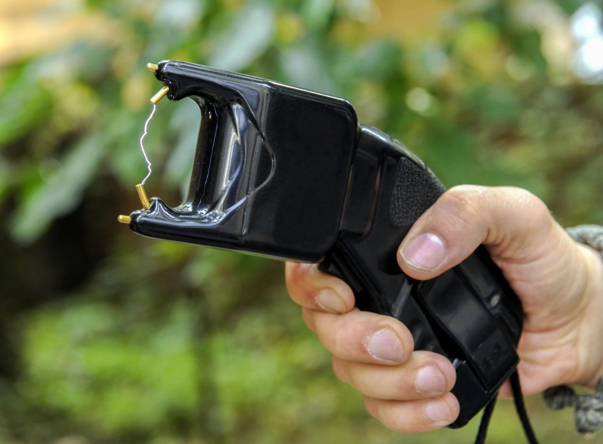
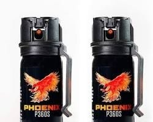

Your safety, our priority
A stun gun is a self-defense device that emits a high-voltage electric shock to incapacitate an attacker. It's designed to be non-lethal, but it can cause temporary pain and confusion.
How to Use:
Hold Correctly: Grip the stun gun firmly with your dominant hand. Aim: Point the stun gun towards the attacker's body, preferably at a close range. Activate: Press the trigger or button to activate the stun gun.Pepper spray is a self-defense product that contains a concentrated form of capsaicin, the chemical that gives chili peppers their spicy heat. When sprayed into a person's eyes or face, it causes intense burning, pain, and temporary blindness.
Irritation: Capsaicin irritates the mucous membranes of the eyes, nose, and mouth, causing intense pain and discomfort. Disorientation: The sudden onset of pain and temporary blindness can disorient an attacker, giving you time to escape or seek help. Deterring Aggression: The unpleasant experience of being sprayed with pepper spray can deter future attacks.
A personal alarm is a small, portable device designed to emit a loud, piercing sound to deter attackers or attract attention in emergency situations. They are often used by individuals who feel unsafe while walking alone, jogging, or traveling
Personal alarms typically have a simple mechanism. A small pin or button is pressed or pulled, triggering a loud siren or buzzer. Some models also include a built-in LED light that flashes to further attract attention. The alarm can be easily activated with one hand, making it convenient to use in a stressful situation.